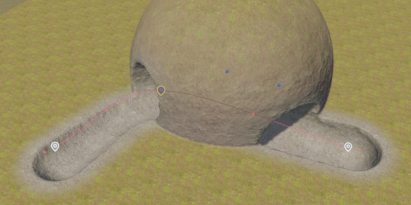

Terrain Brush 3D Component
The Terrain Brush 3D Component modifies terrain volumes by carving out or adding voxel geometry, or by painting a material layer onto the surface. It is the volumetric counterpart to the Terrain Brush 2D Component and shares a lot of properties with it.
For an overview of the terrain system, see Terrain System.
Modify Modes
ModifyMode — How the brush affects the volume within its footprint.
| Mode | Description |
|---|---|
Carve |
Removes voxels within the brush's inner volume. |
Fill |
Adds voxels within the brush's inner volume. |
Paint Only |
Only paints the material layer, doesn't change geometry. The outer radius affects the material's fade distance. |
Shape
The brush footprint is a 3D rounded box oriented by the owner object's rotation.
HalfSizeX — Half-length along the forwards axis.
HalfSizeYTop, HalfSizeYBottom — Half width at the top or bottom of the brush. By using a wider base, you can create more realistic tunnels.
HalfSizeZ — Half-length along the up axis.
For the remaining properties, see Terrain Brush 2D Component.
Spline Brushes
Spline support works the same way as for 2D brushes. Attaching a Spline Component to the same game object extrudes the brush volume along the spline. This is the best way to create tunnels and passages.
